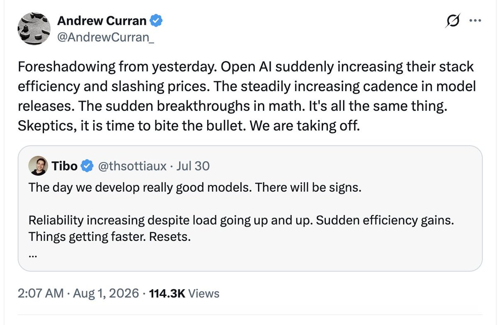
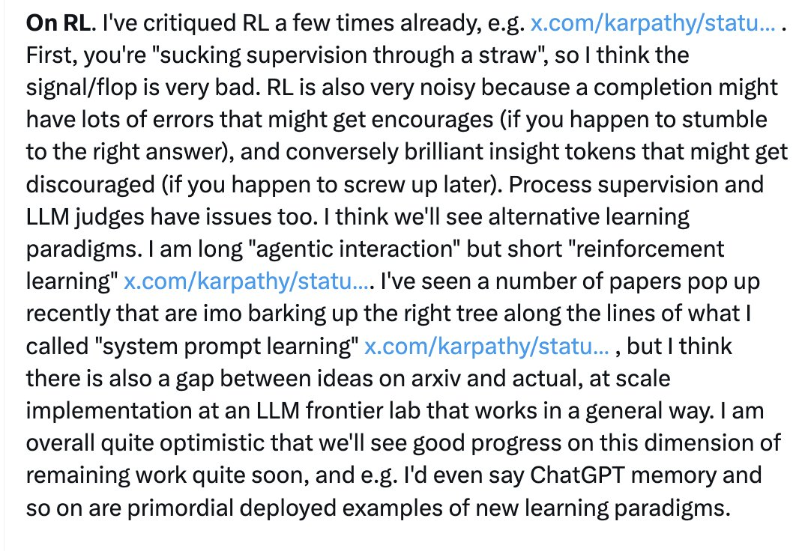
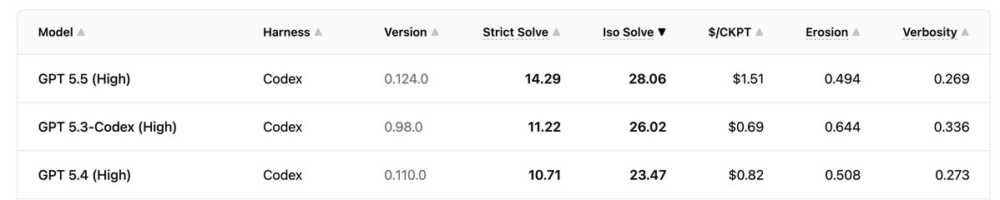
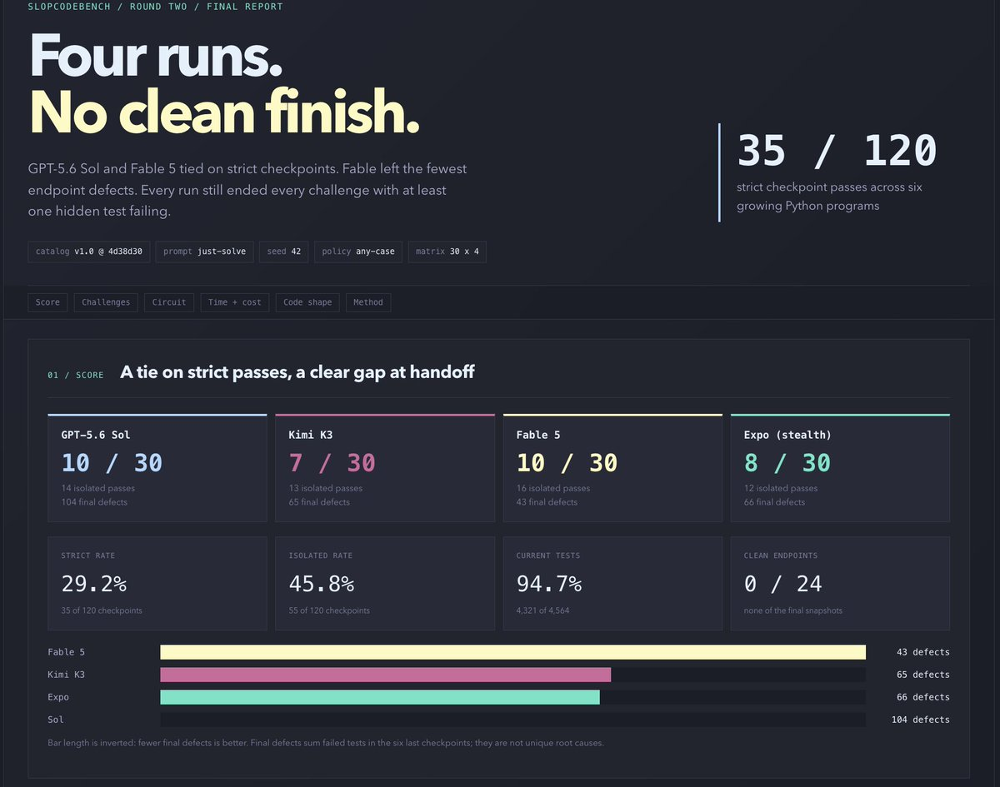

Intelligence too spiky, verifiers too brittle, horizons too short. The conditions for take off are not yet reached. We're still missing the "G" in AGI. — Ian Butler, referencing SlopCodeBench
SlopCodeBench is a benchmark of 36 problems and 196 checkpoints where AI coding agents repeatedly extend their own solutions. Unlike prior iterative benchmarks, the evolving specifications demand architectural decisions but leave internal structure to the agent.
The paper measures two forms of degradation: structural erosion (concentrated complexity) and verbosity (redundant code). Evaluating 15 coding agents across open and closed models, they find that no agent fully solves any problem end-to-end, and the best agent passes only 14.8% of checkpoints.
Quality degrades across checkpoints: structural erosion rises in 77% of trajectories and verbosity in 75.5%. Compared to 473 open-source Python repositories, agent code is 2.3x more verbose and 2.0x more eroded. Human repositories degrade less often and by smaller margins across their git histories.




Explicit quality guidance reduces initial verbosity and erosion by up to a third, without affecting degradation rates. The benchmark reveals that agents pass individual checkpoints while producing code that steadily erodes and bloats with each turn — a fundamental limitation of current agentic coding systems over long-horizon tasks.
Paper: arXiv:2603.24755 — SlopCodeBench: Benchmarking How Coding Agents Degrade Over Long-Horizon Iterative Tasks